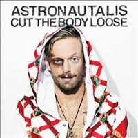
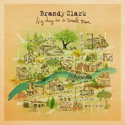
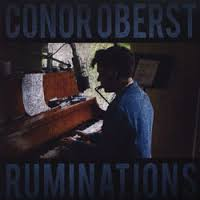
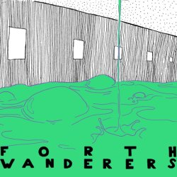
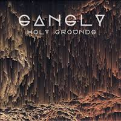
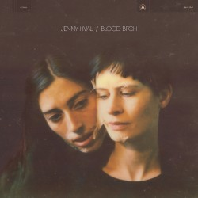
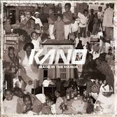
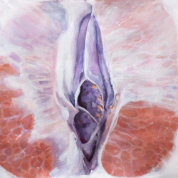
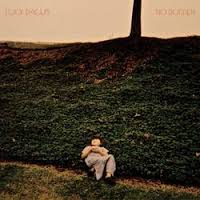
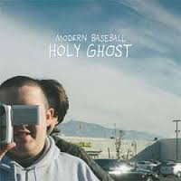

Top Tracks of 2016: Individual Favourites
By No Ripcord Staff
Every year there are some tracks that just slip through the cracks, rescued by the love and attention from one individual staffer. Ahead of our list showcasing our favourite songs of the year, here are the ones that didn’t make it, but captured the imagination of our writers in isolation.
Astronautilus
“Running Away From God”
(from “Cut The Body Loose” on SideOneDummy Records)
Astronautalis is a master storyteller. His lyrics and delivery do more than paint a scene. They can transport you to a place you've never visited with people you've never met but it will feel like home. There's no way to listen to Running Away From God without getting invested. From the New Orleans after Hurricane Katrina to a depressed town in Slovakia, his words are about the survivors, the ones who take on awful circumstances and find ways to live. "Slovakia'll get busy, they don’t need no words / And anything is a club if the speakers work / Turn it up till it shakes the rafters / No kings, no gods, no masters," he says, rapping over a musical bed by John Congleton that fuses saloon music with hard 21st Century beats. There's no other artist like Astronautalis. Listen to his music and you may learn something about survival too. Joe Marvilli

Brandy Clark
“Since You’ve Gone To Heaven”
(from “Big Day In A Small Town” on Warner Bros.)
What happens when the head of the home dies? In Since You’ve Gone To Heaven, the future of a family and of a community grows bleaker when the crucial binding element is lost. Clark is a masterful storyteller, building her narrative with small details then widening the scope to touch on the burdens and blessings of human relationships. The song’s narrator knows she must learn to live with the loss but hasn’t the tools: “Wish I was more like you / Less like myself.” He’s no longer there to push her forward; the redemption she seeks must come from within. Angel Aguilar

Conor Oberst
“Till St. Dymphna Kicks Us Out”
(from “Ruminations” on Nonesuch)
Ruminations was seen as Conor Oberst’s most intimate solo album yet, and while it was often anxious and lonely, he closes it with a glimmer of hope. The song follows Oberst and a friend reminiscing and finding comfort in each other’s problems (“Let’s get enabled, great minds they think alike”). It never feels self-indulgent, but completely honest in its sentimentality. Both characters in the song know they can’t solve each other’s problems, but they can provide some respite (“Blues are here to stay, but sometimes it’s the simple things that make it all ok”). It’s not a celebratory song, but Oberst finds the beauty in the nostalgia, with no chord or lyric wasted. There are slight errors in his playing, but it only serves to make it more endearing. As the album’s closer it feels like one last ode to the past, before stepping into the future. Matthew Smith
Forth Wanderers
“Slop”
(from “Slop EP” on Father/Daughter Records)
New Jersey teens Forth Wanderers released a brilliant EP, Slop, in November, but the title track introduced the band to a larger audience several months earlier. Their rise in indie circles even provided (and is still providing) a huge boost to the profile of their namesakes: a junior football team in Scotland, who are swamped with a social media crusade every time the band announce a gig. Thick-textured, gooey guitars wash, and indeed slop, around a pastel-coloured basin without any momentum of real force. Its pace is laboured, swirling like the liquid in an emptying sink, but its body doesn’t go anywhere. Instead it constantly launders its way around itself in perpetual motion, lathering and reassuring the emotional sensitivity of youth. Forth Wanderers have fast become one of the most prized jewels in many an indie circle, and Slop is the main reason why. Carl Purvis
Gangly
“Holy Grounds”
(stand-alone single on Caroline International)
In recent years, Reykjavik’s fertile music scene has been steadily influenced by hip-hop. In Holy Grounds, the second single from enigmatic super-group (in Icelandic indie terms at least) Gangly, it discovered trap. However, it’s as recognisably of its place of origin as the first trap tracks were of theirs – instead of the feverish sweatiness of southern USA, Gangly’s take on the genre is rather chillier. Built as much around quietness and empty space, Holy Grounds is an eerie declaration of desire that’s as morbid as it is lustful. Subtly crafted by the group (which includes members of Samaris and Sin Fang), its unusual tone and carefully blended layers of sound result in a track that remains fascinatingly enigmatic after repeated listens. Mark Davison
Jenny Hval
“Conceptual Romance”
(from “Blood Bitch” on Sacred Bones Records)
There’s a lot to swallow in Jenny Hval’s Blood Bitch. Rarely is an experimental album so abstract, yet so approachable. A labyrinth of ideas begging to be explored, but offering little in the way of clues – honey for the mind. Conceptual Romance is the album’s highlight. It’s meditative and reassuring, processing the tangles of being a woman navigating modern society: a constant cycle of self-improvement, ritualistic routine, and managing expectations. As Hval asserts, somewhat panicky, “I’m working on it.” And that’s more than enough. Conceptual Romance is a soothing balm on an album of delirium and chaos. The song floats like an infinite cloud, elevating the listener to a realm of self-acceptance. Swelling with fortitude, the distortion as the track fades out is a gentle reminder to come back to earth, which is now a little bit less lonely than before. Ellis Victoria
Kano
“New Banger”
(from “Made In The Manor” on Parlophone/Bigger Picture Music)
Skepta’s Konnichiwa winning the Mercury Prize may have been the high point in grime’s strong year, but it shouldn’t overshadow the return to form of one of the cornerstones of the genre, Kano. The East London MC managed to both prove he was still relevant whilst reasserting his credentials on this, well, banger. The beats are attacked with gusto while Kano waxes lyrical about grime’s early days (“We raved on top of the Princess Alice”), his own prowess (“Done the debate and I am the G.O.A.T.”) and the musical influences from his childhood (“House partying to dancehall riddims / It’s in my DNA, I can’t part with it / Before I knew the whole alphabet / I knew Zungguzungguguzungguzeng”). And the whole thing is done with the kind of hunger rarely seen from a rapper with so long in the game. Kano says it best himself: “The ruler’s back.” Joe Rivers
liv
“Wings Of Love”
(stand-alone single on INGRID/INGSOC)
This year saw the birth of supergroup liv, fronted by Lykke Li and featuring members of Miike Snow and Peter, Bjorn and John. Such a collective wealth of talent could have resulted in music that was showy, pretentious or overproduced, but debut single Wings Of Love is none of these things. It’s joyous and simple, with harmonies running at thirds apart and a prominent acoustic guitar part that together evoke any number of bands from the 60s and 70s. Thoughts of this era are further enforced by the track’s accompanying music video, directed by Li and billed as “an ode to Swedish summer”, featuring a free-loving group of adults embracing and enjoying the outdoors au naturel with interspersed sections of psychedelic animation. Craig Stevens
Lucy Dacus
“I Don’t Wanna Be Funny Anymore”
(from “No Burden” on Matador Records)
Fast on the heels of other deep-voiced debuts from very young lady crooners (come back after listening to Torres if you have to), Lucy Dacus hit the high point of her first record with this self-conscious track. The monotone grit of an electric guitar blends with her soft, earnest voice. The song itself embodies youthful indecision and the pains of fitting in: “I'll buy the clothes and I'll be the best dressed / I'll buy the books and I'll be the smartest / I'll play guitar and I'll be the artist… try not to laugh.” Anything not to be the one stared at, mocked, dismissed. A simple but gut-wrenchingly honest and relatable song, Dacus' Funny is an indie rock gem. Gabbie Nirenburg
Modern Baseball
“Apple Cider, I Don’t Mind”
(from “Holy Ghost” on Run For Cover Records)
While no moment on Holy Ghost is truly a solo effort, it’s pretty safe to credit Brendan Lukens’ urgent, exposed-nerve yelp for nailing this one, even if he can’t seem to make it all out. Many of Lukens’ contributions to Modern Baseball’s largely split LP have the knotty grace of a nervous breakdown, but on Apple Cider…, Lukens leads a triumphant, direct march into the battlefield of uncertainty. “Did you ever love me? Biopsy from the origin of sound / Confirms you’re speaking truthfully,” he barks spasmodically, as if he’s just discovered that this thing called music can just maybe help us make sense of all the noise, no matter what mistake we’re stuck forcing ourselves to relive. As always, it’s a losing battle, but with indie rock this bracing and heart-splattered, how can we not root for such effort? Peter Quinton
Xenia Rubinos
“Mexican Chef”
(from “Black Terry Cat” on Anti)
In a year riddled with a glut of remarkable pop tracks, the vastly underrated Mexican Chef remained on the outer fringes of public consciousness. The Brooklyn singer-songwriter of Puerto Rican and Cuban descent makes sense of her surroundings by highlighting the melting pot of cultures that she encounters on an everyday basis with vivid and colourful detail. And yet, instead of patronising or singling out any specific group, she merely intends to celebrate those who she identifies with, addressed with an unpretentious simplicity that puts emphasis on the rhythm rather than the message. But who needs any profound explanations when you’ve got the charismatic Rubinos to guide you through the busy New York City streets with her joyfully eclectic, genre-bending explorations. Juan Edgardo Rodriguez
15 December, 2016 - 04:08 — No Ripcord Staff